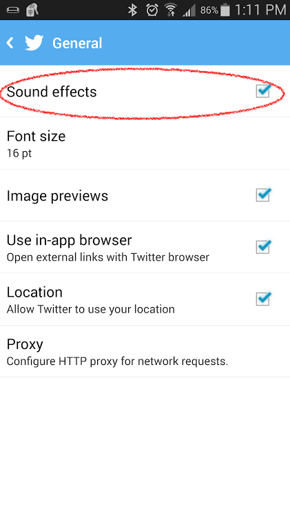
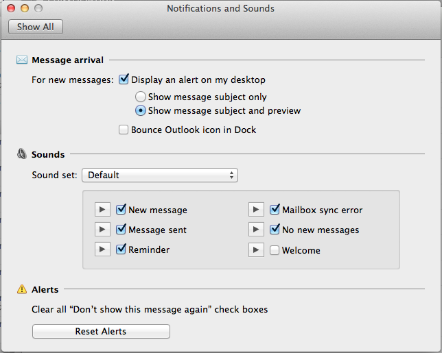

Developer Content Manager at Telerik
I run the Telerik Developer Network
Co-editor of Mobile Web Weekly
Live in Boston
"Why" not "How"

Twitter app settings

Outlook sound settings
"We've all seen Star Trek etc and are used to the idea of 'high tech' machines beeping, whether to alert us or simply as user feedback devices when activated. Similarly many cellphones default to beeping on user actions eg entering txt etc. But it is rare to see it used on a website, not that anyone wants to be 'beeping' on every click, but there is the potential to add to the character & feel of a site via use of sound..."
- Tim Prebble
"Audio is particularly useful when there is no screen or when looking at the screen is not possible or not desirable (such as when users want to multitask)."
- Karen Kaushansky
"Gaver (1986) investigated representational earcons, which he called auditory icons. His auditory icons are caricatures of naturally occurring sounds such as bumps, scrapes, or even files hitting mailboxes."
- Meera M. Blattner, Denise A. Sumikawa, and Robert M. Greenberg (1989)
"[Earcons] are audio messages used in the user-computer interface to provide information and feedback to the user about computer entities."
- Karen Kaushansky
Just like icons, "Earcons"...
"Would the addition of sound to this event provide redundant information and therefore better feedback? Or would this sound merely be superfluous and/or annoying?"
- Victor Lombardi
"Users switch their devices to silent when they want to:
- Avoid being interrupted by unexpected sounds, such as phone ringtones and incoming message sounds
- Avoid hearing sounds that are the byproducts of user actions, such as keyboard or other feedback sounds, incidental sounds, or app startup sounds
- Avoid hearing game sounds that are not essential to using the game, such as sound effects and soundtracks"
- Apple iOS Human Interface Guidelines
Sliders
Input
Page updates/status
Buttons
Notifications
Record your own.
Web Audio API - oscillators, filters and effects
Email: brian.rinaldi@telerik.com
Twitter: @remotesynth